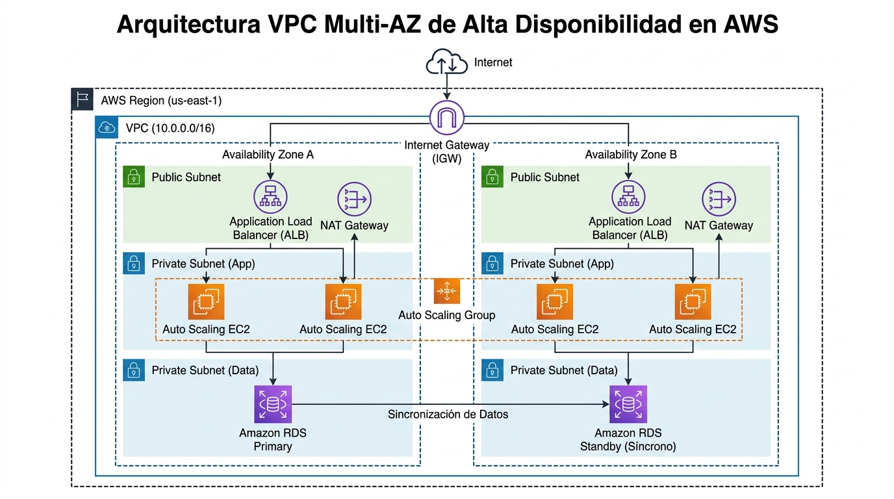

Amazon VPC, subnets y route tables Amazon Virtual Private Cloud
La red privada lógica donde vive casi toda arquitectura del examen: si lees los diagramas de VPC con soltura, el 70% de las preguntas de redes se responden solas.
Amazon VPC es tu apartamento dentro del edificio AWS: una red virtual lógicamente aislada de las demás, donde lanzas los recursos que tú defines y que se parece a la red tradicional de un data center propio — pero con la infraestructura escalable de AWS detrás. El aislamiento lo marca el bloque CIDR de IPv4 que eliges al crearla (por ejemplo 10.0.0.0/16); a partir de ahí, las paredes internas del apartamento son las subnets (porciones del CIDR asignadas a una AZ concreta) y el sistema de señalización es la route table, que decide a dónde va cada paquete según su IP de destino.
Esta página es la "core" de redes porque el patrón que aquí se describe — VPC con subnets públicas y privadas en varias AZs, internet gateway para las públicas, NAT gateway para la salida de las privadas y route tables dirigiendo el tráfico — es el sustrato de todos los demás temas: load balancers, endpoints, peering, VPN y seguridad de red lo presuponen. El examen dice public subnet y private subnet sin explicarlas: publica es la que tiene ruta directa al internet gateway; privada es la que no la tiene y necesita un dispositivo NAT para salir. Ni más ni menos.

Qué es una VPC y qué se despliega en ella
Con Amazon VPC lanzas recursos AWS en una red virtual aislada que tú defines, y que se parece a la red que operarías en tu propio data center. Es un recurso regional: una VPC vive en una Region y se extiende sobre todas sus AZs — son sus subnets las que se anclan a una AZ concreta. Al crearla le das un bloque CIDR IPv4 (el rango de direcciones privadas de toda la red); opcionalmente puede ser dual-stack añadiendo un bloque IPv6, e incluso existen subnets IPv6-only. Cada Region de cada cuenta incluye una VPC por defecto ya configurada con subnets públicas listas para lanzar instancias — perfecta para experimentar, casi nunca la arquitectura que pide el examen.
Dentro de la VPC despliegues la práctica totalidad de los recursos con interfaz de red: instancias EC2, bases de datos RDS (hoy en subnets dedicadas llamadas DB subnets en ≥2 AZs), contenedores, Lambda conectada a VPC, endpoints de PrivateLink, load balancers y gateways de todo tipo. Los recursos de una misma VPC se comunican por direcciones IP privadas dentro del CIDR sin atravesar internet; la comunicación hacia fuera — internet, otras VPCs o tu data center — requiere piezas explícitas: internet gateway, NAT, peering, Transit Gateway, VPN o endpoints. Esa es la tesis de diseño de toda la familia de páginas de red: nada sale de la VPC salvo que construyas la ruta.
Subnets: el tipo lo define el routing, no el nombre
Una subnet es un rango de direcciones IP dentro de tu VPC. Regla estructural insoslayable: cada subnet reside íntegramente en una Availability Zone y no puede abarcar dos — por eso lanzar recursos en subnets de AZs distintas protege las aplicaciones del fallo de una AZ. El tipo de subnet no es una casilla que se marca, sino el resultado de cómo configuras su routing: una public subnet tiene ruta directa a un internet gateway y sus recursos pueden hablar con internet; una private subnet carece de esa ruta directa y necesita un dispositivo NAT para acceder a internet (solo salida); una VPN-only subnet encamina hacia una conexión Site-to-Site VPN a través de un virtual private gateway sin tocar internet; y una isolated subnet no tiene rutas a destino fuera de la VPC — solo ve lo que hay dentro, el patrón típico de capas de datos.
Añade a la definición la dirección IP: las instancias de subnets privadas usan IP privadas del CIDR; en una pública, además, decides si la subnet auto-asigna IP pública a los recursos nuevos (auto-assign public IP), un ajuste por subnet que provoca clásicas preguntas "mi EC2 en la subnet pública no tiene IP pública". Y si vas a IPv6: las subnets dual-stack llevan ambos CIDRs, las IPv6-only solo IPv6 (con direcciones link-local 169.254.0.0/16 para servicios internos de la VPC), y para salida única de IPv6 existe el egress-only internet gateway, el equivalente asimétrico del NAT.
| Tipo de subnet | Definición (routing) | Uso típico |
|---|---|---|
| Public | Ruta directa al internet gateway | ALB, NAT gateway, bastion host, proxies |
| Private | Sin ruta directa a IGW; salida vía NAT | Servidores de aplicación y web (sin IP pública) |
| VPN-only | Ruta a Site-to-Site VPN vía virtual private gateway; sin IGW | Recursos que solo hablan con on-premises |
| Isolated | Sin rutas fuera de la VPC | Capas de datos (RDS, ElastiCache) sin salida |
trafico de internet"} Q1 -->|"si"| PUBLIC["Public subnet
ruta 0.0.0.0/0 a IGW"] Q1 -->|"no"| Q2{"Necesita iniciar
salida a internet"} Q2 -->|"si"| PRIVATE["Private subnet
mas NAT gateway"] Q2 -->|"no"| Q3{"Solo habla con
on-premises"} Q3 -->|"si"| VPN["VPN-only subnet
via virtual private gateway"] Q3 -->|"no"| ISO["Isolated subnet
sin rutas externas"] classDef navy fill:#EFF6FF,stroke:#3B82F6,stroke-width:2px,color:#1E293B classDef green fill:#F0FDF4,stroke:#10B981,stroke-width:2px,color:#1E293B classDef amber fill:#FFF7ED,stroke:#F59E0B,stroke-width:2px,color:#1E293B class Q1,Q2,Q3 navy class PUBLIC,VPN green class PRIVATE,ISO amber
Route tables: el controlador de tráfico de la VPC
La route table es literalmente el traffic controller de la VPC: un conjunto de reglas — routes — que determinan hacia dónde se dirige el tráfico que sale de una subnet o un gateway. Cada ruta especifica un destino (un bloque CIDR o un prefix list) y un target: internet gateway, NAT gateway, conexión de peering, VPN, Transit Gateway, gateway endpoint, ENI… El paquete se enruta comparando su IP de destino con los destinos de las rutas; gana la ruta más específica (el prefijo más largo), y la ruta local — que permite el tráfico dentro del CIDR de la VPC — viene incluida por defecto y no se borra. Así se montan las arquitecturas de subnets públicas, privadas, VPN-only e isolated que describen las tablas de rutas.
Al crear la VPC se crea su main route table, y cada subnet que no asocies explícitamente a otra hereda la main — la trampa clásica de "creé una subnet y ya salía a internet": era la main la que tenía la ruta al IGW. Lo operativo es crear route tables propias por tipo de subnet: la de las públicas con 0.0.0.0/0 → igw y la de las privadas con 0.0.0.0/0 → nat-gateway. Una subnet solo puede estar asociada a una route table a la vez, pero una route table sirve a muchas subnets — por eso mismo se comparte patrón de routing por capas. También existen route tables de gateway (asociadas a IGW o virtual private gateway) para redirigir tráfico al entrar o salir de la VPC, típicamente para inspección con appliances.
| Route table | Destination | Target | Efecto |
|---|---|---|---|
| Public subnets | 10.0.0.0/16 | local | Tráfico interno de la VPC |
| 0.0.0.0/0 | igw-xxx | Salida/entrada directa a internet | |
| Private subnets | 10.0.0.0/16 | local | Tráfico interno de la VPC |
| 0.0.0.0/0 | nat-xxx | Salida a internet vía NAT gateway | |
| VPN-only subnets | 10.0.0.0/16 | local | Tráfico interno de la VPC |
| 0.0.0.0/0 | vgw-xxx | Todo hacia on-premises por VPN |
CIDR y diseño de direccionamiento
El bloque CIDR es una decisión de arquitectura, no un trámite: condiciona cuántas subnets puedes crear, cuántos hosts caben en cada una y con quién podrás interconectar la VPC después. Elige rangos privados RFC 1918 (10.0.0.0/8, 172.16.0.0/12, 192.168.0.0/16) y planifica sin solapamientos con tus otras VPCs ni con la red on-premises: la documentación de VPN y peering recomienda expresamente CIDRs no superpuestos, porque un solape impide el enrutado correcto. Un patrón sano es CIDR de VPC amplio (p. ej. 10.0.0.0/16) dividido en subnets /24 por AZ (p. ej. 10.0.1.0/24, 10.0.2.0/24…), reservando espacio para AZs futuras y para segmentos nuevos.
Piensa también en el crecimiento de cada capa: la subnet de datos no necesita el mismo tamaño que la de aplicación, y ciertos rangos quedan reservados dentro de cada subnet (AWS reserva exactamente 5 direcciones IP en cada subnet: la primera para red .0, la .1 para el router de la VPC, la .2 para el DNS de AWS/AmazonProvidedDNS, la .3 para uso futuro de AWS y la última .255 para network broadcast: en una /24 quedan 251 direcciones utilizables, es decir 256 − 5 = 251). Si conectas muchas VPCs entre sí o con on-premises, el diseño de CIDRs es lo que decide entre "peering directo" y "habrá que renumerar". El destino puede ser también un prefix list — una lista nombrada de CIDRs gestionada centralizadamente — útil para no repetir la misma lista de redes en mil rutas. Con IPv6 el diseño cambia: los blocos los asigna AWS de su espacio y el reto se desplaza al routing y a los mecanismos de salida (egress-only IGW, NAT64/DNS64).
| Si el enunciado dice… | La respuesta apunta a… |
|---|---|
| "resources must survive the failure of an AZ" | Subnets en distintas AZs (una subnet = una AZ) |
| "instances need internet access but no public IPs" | Private subnet + NAT gateway + ruta 0.0.0.0/0 |
| "database must not be reachable from the internet" | Isolated/private subnet sin ruta a IGW |
| "new subnet unexpectedly reaches the internet" | Heredó la main route table con ruta al IGW |
| "cannot establish peering/VPN routing" | CIDRs solapados entre redes |
| "route traffic to an inspection appliance" | Route table con la ENI/appliance como target |
- La VPC es una red virtual lógicamente aislada, regional, definida por su CIDR IPv4 (dual-stack/IPv6 opcional).
- Una subnet reside íntegramente en una AZ; el tipo (public, private, VPN-only, isolated) lo decide su routing.
- Public = ruta directa al internet gateway; private = salida solo mediante NAT; isolated = sin rutas externas.
- La route table mapea destination (CIDR/prefix list) → target (IGW, NAT, peering, VPN, TGW, endpoint); gana el prefijo más específico.
- Toda subnet sin asociación explícita hereda la main route table de la VPC.
- Diseña CIDRs sin solapamientos con otras VPCs y on-premises; reserva espacio por AZ y capa.
- La ruta
localviene por defecto y habilita el tráfico dentro del CIDR de la VPC. - En IPv6, la salida "solo-out" se resuelve con un egress-only internet gateway.
- NET-01 Amazon VPC — What is Amazon VPC · docs.aws.amazon.com/vpc/latest/userguide/what-is-amazon-vpc.html
- NET-02 VPC — Subnets (public vs private, CIDR) · docs.aws.amazon.com/vpc/latest/userguide/configure-subnets.html
- NET-03 VPC — Route tables · docs.aws.amazon.com/vpc/latest/userguide/VPC_Route_Tables.html